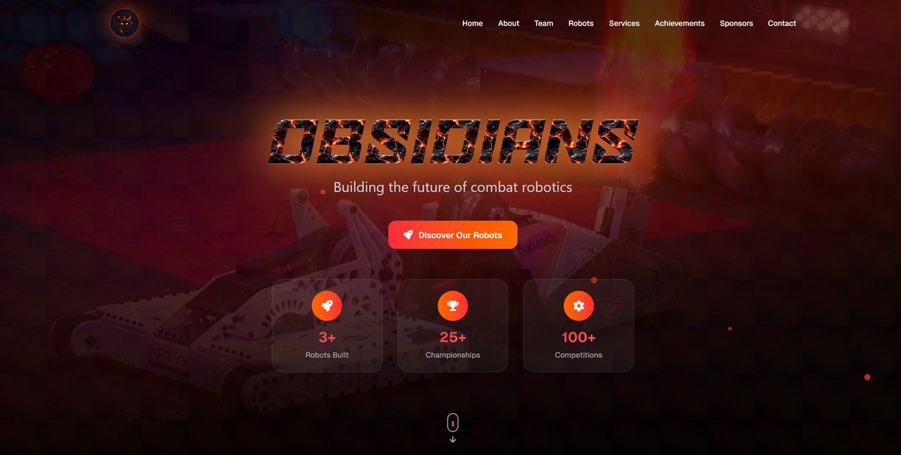
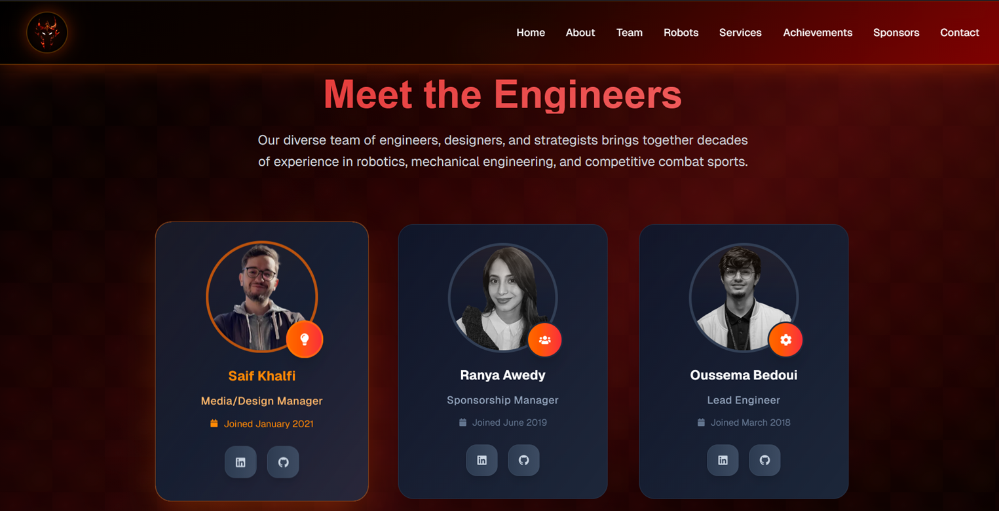
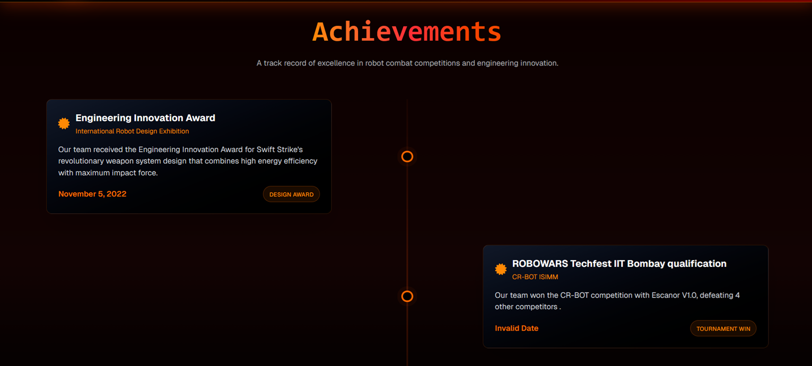
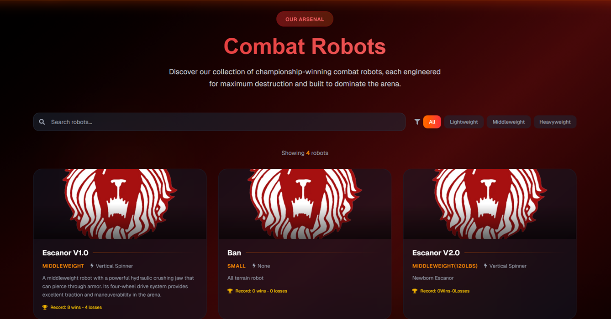

Obsidians Website
Links
Project Description
The official website for the Obsidians team, a group of engineers and builders creating competitive fighting robots. The goal of the project was to deliver a fast, clean, and maintainable website that clearly presents the team, their work, and their identity.
I built it using Nextjs and tailwind, focusing on clean UI, fast load times, and good responsiveness across devices, ensuring optimized SEO was also a priority, through semantic HTML, proper metadata, image optimization, fast load times, and strong Core Web Vitals, using static generation where possible to improve performance and search visibility.
Development involved a lot of back-and-forth with the team to refine the layout, content structure, and visual direction until we reached the final result.
To make the site easy to maintain long-term, I integrated Netlify CMS, allowing the team to manage content without touching the codebase. The website is deployed and hosted on Netlify, using its CI/CD pipeline for fast, reliable builds and updates.
Screenshots



